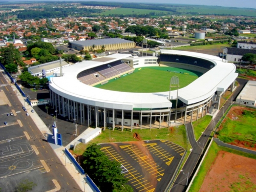

O Estádio Dr. Adhemar Pereira de Barros, conhecido como Fonte Luminosa, foi inaugurado em 10 de junho de 1951, com o jogo entre Ferroviária e Vasco da Gama.
Em 2009, após reformas, foi inaugurada a Arena Multiuso da Fonte Luminosa, com capacidade para 25 mil pessoas e moderna infraestrutura.
O estádio também abriga o Museu do Futebol e Esportes de Araraquara, que preserva a história do esporte local.

Mais informações
| Nome | Estádio Municipal Olivério Bazzani Filho (Fonte Luminosa) |
|---|---|
| Inauguração | 10/06/1951 |
| Capacidade | 25.000 pessoas |
| Primeiro Gol | Friaça (Vasco da Gama) |
| Reformas | 1992 e 2009 |
| Recorde de Público | 21.254 pessoas (22/10/2009) |
| Dimensões do Gramado | 110m x 75m |
📍 Localização e Contato
Endereço: Praça Scalamandré Sobrinho, s/nº – Vila Ferroviária, Araraquara - SP
Telefone Museu: (16) 3322-2207
Informações práticas
Horário Museu: Terça a sexta, 8h às 17h; sábado, 8h30 às 12h
Infraestrutura: Vestiário, área VIP, loja oficial, centro médico, entre outros
Observação: O estádio tem acessibilidade e é um patrimônio histórico